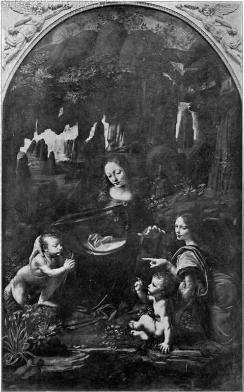
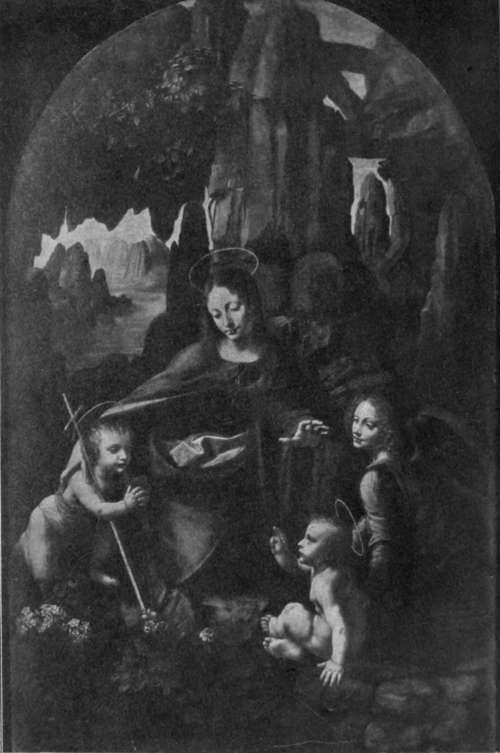

The Records, 1494-1519. Part 10
Description
This section is from the book "Leonardo Da Vinci", by Edward McCurdy. Also available from Amazon: Leonardo Da Vinci.
The Records, 1494-1519. Part 10
The list of works done at Rome is a meagre one. Vasari refers to the perpetual discord with Michelangelo as in evidence at Rome, but the cause of the lack of commissions lay within himself. The practice of painting had no longer more than a secondary interest for him. More than ever the trend of his activity was scientific. His writings show that he was engaged in studies in optics, in acoustics,1 in anatomy at the Hospital,2-for which he was denounced to the Pope by one of his apprentices-studying geology in the Campagna,3 devising improved methods for coining for the mint at Rome,4 undertaking engineering works at the harbour of Civita Vecchia,5 and finishing " on the 9th of July at 11 o'clock at night," a treatise on geometry. Small wonder that in the drafts of a letter to his patron 6 he speaks of recovering from an illness, and regrets not to have been able to satisfy completely His Excellency's desires! The letter is filled with querulous complaints of two German apprentices. His stoicism was not proof against the lesser foes of his own household.
A note "at Parma at ' La Campana' on the 25th of September, 1514,"7 possibly refers to a visit there; but in a letter of December 14th to Giuliano da Vinci, who was then in Rome, his wife Alessandra asks to be remembered to his brother Leonardo, " vuomo excellentissimo e singhularissimo," 1 and Leonardo is in Rome on the 9th of January, 1515, and records the departure of Giuliano de' Medici to Savoy, and the news of the death of Louis XII.2
1 C. A., 65 r.
2 C. A., 182 v., R., 1353.
3 C. A., 92 v.
4 R., 726
5 C. A., 63 V
6 C. A., 247 v.
7 R., 1065
This is the last reference to his presence in the Papal City. II Magnifico returned with his bride in February, and set out in July with the Papal army, and all his household, and presumably with Leonardo, to watch the movements of the French, and if necessary to defend his possessions; but fell sick and went to Florence and there died on March 17th, 1516. Leonardo apparently accompanied the Papal army to Piacenza, and Dr. Solmi cites a note in the Codice Atlantico,3 of the towns between Piacenza and Bologna as indicating his route from there to be present at the Concordat held in Bologna in December between the Pope and the victor of Marig-nano, Francis I. It is entirely probable that Leonardo was present, and there met Francis I., and that when in January, 1516, a month after the Concordat, the King returned to France, he took with him Leonardo, together with Francesco Melzi and his servants, Salai and Baptista de Villanis. The exact circumstances of his departure to France are not known. He was allotted as residence the manor house at Cloux, near to the royal chateau of Amboise. His offices were, "premier peintre et ingenieur et architecte du Roy, mechanischien d'estat."4 His salary, according to Benvenuto Cellini, was 700 crowns, the equivalent of ;£ 1,400.
1 Uzielli (1872), Doc. XXII.
2 R., 1377
3 C. A., 259 r. (Solmi). I have failed to identify the reference. His presence in Bologna is however referred to on 257 r.
4 Piot, "Le Cabinet de 1'Amateur," 1863, No. 26 (Miintz).
Plate 21. The Virgin Of The Rocks
The Louvre
Plate 22. The Virgin Of The Rocks
Hanfstangl photo - National Gallery
A few miles distant was the castle of Loches, where, eight years previously, the captivity of his old patron, Ludovic Sforza, had ended in death.
There is a drawing at Windsor of Amboise seen across the Loire, its towers evanescent as in morning light, and there are a few notes in the MSS. which relate to work done in France.
Most of these relate to the construction of a canal with locks near Romorantin, on a tributary of the Loire, which formed part of a larger project for connecting the waters of the Loire and the Saone. One of these passages 1 refers to his having done similar work at Friuli and is the only record of his having been there.
Passing in review the wanderings of his life from Tuscany to Amboise, employment in works of engineering and canalisation recurs as consistently as in art.
He designed a pleasure palace near to Amboise, of which there is a ground-plan with explanatory notes in the Codice Atlantico.2 "The palace of the prince," Leonardo calls it. It is rectangular, with round towers at each corner, and surrounded by a moat. On one side is a road leading to Amboise, on the other a lake to be used for aquatic tournaments.
Mr. T. A. Cook, in " The Spiral in Nature and Art," seeks to show that he was the architect of the spiral staircase in the Chateau of Blois, of which the construction was commenced in 1516, and adduces considerable though indirect evidence to support the theory from Leonardo's studies of spiral forms in nature, his drawings of dust and smoke, of falling water and of the coils of Leda's hair.
1 Arundel, 270 b.; R., 1077.
2 R., LXXXI. 2 and 748, C. A., 76 v
There are no records as to the authorship of the spiral staircase.
The only contemporary account of his life at Cloux is that of a visit paid to him by the Cardinal of Aragon on the ioth of October, 1517, as described by the Cardinal's secretary, Antonio de Beatis,1 on which occasion Leonardo showed him the portrait of a Florentine lady painted for Giuliano de' Medici, a S. John the Baptist as a youth, and a Madonna and Child in the lap of S. Anne.
" A certain paralysis has," he says, " attacked his right hand, which forbids the expecting of any more good work from him, but he has given a very good training to a Milanese pupil who works extremely well, and although Leonardo can no longer colour with that sweetness with which he was wont he is still able to make drawings and to teach others."
Continue to:
Tags
leonardo da vinci, pictures, drawings, galleries, statues, da vinci